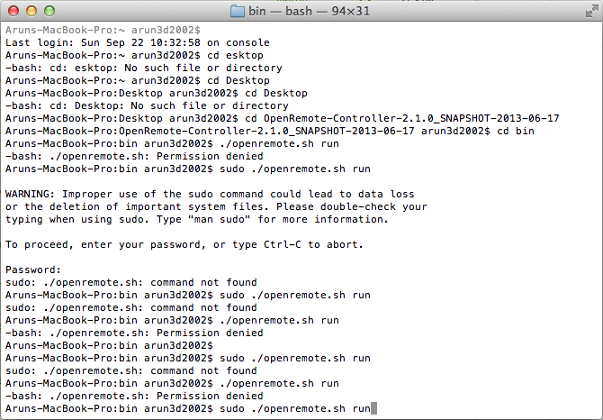
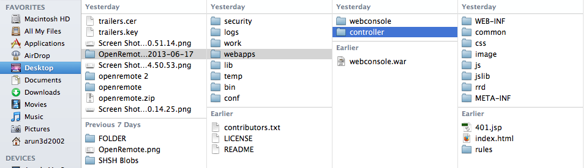
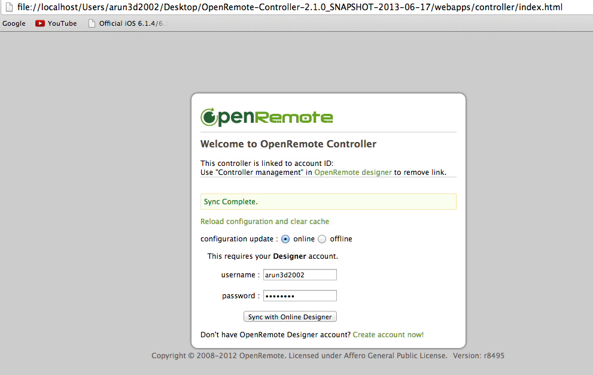
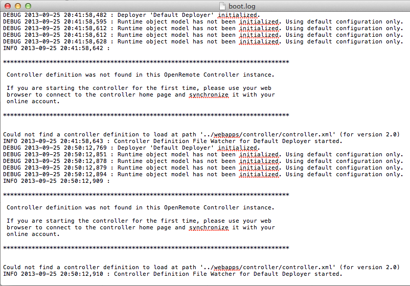

Hi, I am new to OpenRemote. Watched couple of videos n youtube. very much impressed to set my Auto-Home. Thought of starting with free version to setup Samsung TV (UE40ES5500).
Stuck in starting OpenRemote.
Steps i did on my Mac OS X Mountain Lion (10.8.5)
1. Downloaded zip file named "OpenRemote-Controller-2.1.0_SNAPSHOT-2013-06-17".
2. Extracted the file to my Desktop.
3. Opened Terminal
4. Navigated to /bin directory
5. when i typed the command to execute ./openremote.sh run, it says "Permission Denied" - Running this on Administrator account.
6. When i tried the command sudo ./openremote.sh run, it asked for password. When i typed the password, I am getting "command not found" error on Terminal.
Can someone help me please.
(Screenshot attached)
{kind=link}
{kind=link}
{kind=link}
{kind=link}
{kind=link}
{kind=link}
{kind=link}
|
Make the file executable. |
|
Hi Marcus. Thanks a lot. SECOND STAGE: COULD YOU PLEASE LET ME KNOW AM I DOING IT RIGHT! I have downloaded the app in iPad and added the controller as "http://192.168.1.71:8080/controller/" I haven't done this step: |
|
You don't need to unzip and copy files. This is done by the online sync. |
|
Oh ok. No i couldn't see my design and cant able to add my controller in iPad. Tried adding the controller as http://192.168.1.71:8080/controller THIS IS WHAT I TRIED: Is my STEP 4 is correct? COULD YOU PLEASE EXPLAIN STEP BY STEP, PLEASE. |
|
Your steps are all correct. But it does not find controller.xml which should be there if you sync and it says sync complete. |
|
I loaded the "index.html"typed in my credentials with online radio button selected and submitted. Got a message Sync Completed, but still says could not find controller.xml. Am I doing anything wrong....I cant proceed further. Please help |
|
If you hit the save button in the online designer and look at the exported openremote.zip file, does that include a controller.xml file? |
|
Yes. It has controller.xml file with 2 more files (panel.xml & panels.obj) and 1 "rules" folder with 'modeler_rules.drl' (unix executable file). |
|
After the sync the panel.xml and controller.xml should also show up in the "OpenRemote-Controller/webapps/controller" folder. Is that the case? |
|
No its not. None of those files are not in "OpenRemote-Controller/webapps/controller" folder. THIS IS HOW I SYNC MY DESIGN  |
|
That would assume that there is a problem with permissions or something else. |
|
I navigated to logs folder. On the boot.log file Error says "Could not found controller definition".  |
|
Hello Arun, The homescreen you have posted does not appear to be that of the SNAPSHOT-06-17 controller binary. There seems to be some confusion of which version you are running – which also means the controller files are potentially getting saved to a different location in your file system. The SNAPSHOT-2013-06-17 homescreen should not include account linking information you are showing in your screenshot above and the 2013-06-17 binary will report 'snapshot' as its version in the bottom right corner. |
|
Hello Juha, Sorry to trouble you guys. I am not a developer. I really appreciate your patients for helping me. Could me tell me how to do this. The controller version i downloaded is 2.1.0, whereas on the Terminal it says Version 2.0 -----Is that what you mean. If you guys can tell me exactly what i need to do. Please thanks. How to sync online designer? which URL? I synced the account via index.html in ../webapps/controller/ folder. |
|
Hi Arun, What I mean was that do you have multiple versions of OpenRemote installed on your system? I see OpenRemote 2013-06-07 and openremote and openremote 2 folders at least. Because the screenshot you posted didn't look to me like it was OpenRemote 2013-06-07. Which means you may be looking for the installed files in the wrong folder? If you do a spotlight search for controller.xml from the top right corner on your Mac, what does it find? |